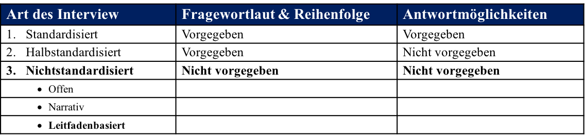

Experten sind zunächst „Angehörige einer Funktionselite, die über besonderes Wissen verfügen“ (Gläser & Laudel, 2009, S. 11).
Auch ohne spezielle Funktion können Personen über Expertenwissen verfügen. Der Experte dient „als Quelle von Spezialwissen über die zu erforschenden [...] Sachverhalte“ (Gläser & Laudel, 2009, S. 12).
Das Experteninterview ist eine Methode, um Zugang zu diesem Spezialwissen zu erhalten. Forschungen, bei denen diese Methode angewandt wird, zeichnen sich durch zwei Merkmale aus:
Der Experte ist nicht das Objekt der Untersuchung, sondern lediglich ein Medium, um Wissen über den jeweiligen Sach- verhalt zu erlangen.
Ebenso kommt den Aussagen der Experten eine „besondere, mitunter sogar exklusive Stellung“ (Gläser & Laudel, 2009, S. 13) zu.
Zur Vorstellung der Interviewpartner →
Die für diese Masterarbeit interviewten Experten sind zwei Berater der KPMG AG Wirtschaftsprüfungsgesellschaft, Frankfurt/Main.
Diese verfügen über interne Erfahrungen aus der Projektarbeit mit verschiedenen Unternehmen und können von Fortschritten, Herausforderungen und Erfahrungen über Industriegrenzen hinweg berichten.
Das erste Interview erfolgt mit Herrn Peter Heidkamp.
Herr Heidkamp arbeitet seit 2002 für die KPMG AG und berät als Partner Kunden mit einem Fokus auf Technologie und Financial Services.
Zu seinen Kernthemen zählen: IT Transformation, Digitale Betriebsmodelle, IT Compliance, Digitales Kundenvertrauen, Cloud-Computing, Enterprise Architecture Management und Business Analytics.
Das zweite Interview wird mit Herrn Achim Schlosser geführt.
Herr Schlosser arbeitet seit über 10 Jahren für die KPMG AG und ist als Senior Manager für die Entwicklung und Umsetzung der globalen KPMG Technologiestrategie im Bereich Data & Analytics verantwortlich.
Seine Projektarbeit und Beratungsleistungen erstrecken sich im Bereich Datamanagement und Analytics sowohl in Großkonzernen als auch in Jungunternehmen.
Zur Analysemethode →
Für die Auswertung und Analyse der durchgeführten Interviews schlägt Mayring (2010) eine Verfahrensweise vor, die es erlaubt, „Texte systematisch [zu] analysieren, indem [...] das Material schrittweise mit theoriegeleitet am Material entwickelten Kategoriensystemen bearbeitet [wird]“ (Mayring, 1996, S. 114).
Dabei werden die Texte ihrem Sinn nach einem Kategoriensystem zugeteilt.
Unter dem Oberbegriff der qualitativen Inhaltsanalyse sollen diese Techniken dabei helfen, „die interpretative Textanalyse intersubjektiv überprüfbar durchzuführen“ (Mayring, 2010, S. 598).
Zum Interviewleitfaden →
Die Herleitung des Interviewleitfadens fußt auf den Ergebnissen der Literaturanalyse.
Auf der Grundlage der nach Attributen beurteilten Empfehlungen, Methoden und Werkzeuge richten sich die Fragen auf die Auswirkungen im Projektalltag.
Zudem wird konkret nach Lösungsvorschlägen gefragt.
Die Ausführlichkeit der Antworten ist schwierig abzuschätzen.
Um im vorgegebenen Zeitfenster zu bleiben, werden erst die Attribute hinterfragt, die nach der Literaturanalyse weniger als fünf Lösungsvorschläge aufgezeigt haben.
Sollte darüber hinaus noch Interviewzeit zur Verfügung stehen, werden ebenfalls die Attribute hinzugenommen, die weniger als zehn Lösungsvorschläge aufgewiesen haben.
Im Folgenden ist der Interviewleitfaden abgebildet:
1. Wie sehen Sie den gegenwärtigen Entwicklungsprozess im Hinblick auf die Auslagerung von IT Infrastrukturen und die Auswahl von Anbietern, aber auch die Nutzung und die Implementierung von Diensten?
2. Welche Bedeutung hat das ITSM für das Cloud Computing?
3. Wie stark sind Aggregator und Integrator im Wertschöpfungsnetzwerk involviert und welchen Herausforderungen begegnen beide Akteure bezüglich der Heterogenität in diesem Netzwerk?
4. Welche Einschätzungen und Empfehlungen können für die Attribute zur Reduzierung der Heterogenität abgegeben werden?
5. Welchem Ausmaß an Heterogenität sind Aggregator und Integrator in ein paar Jahren ausgesetzt?
Hiermit endet der methodische Teil für die Durchführung von Experteninterviews.
Interviews werden durch den Grad der Standardisierung klassifiziert.
Es wird zwischen standardisierten, halbstandardisierten und nichtstandardisierten Interviews unterschieden.
Die Experteninterviews dieser Arbeit werden nichtstandardisiert durchgeführt (dick hervorgehoben).
Standardisierte Interviews geben die Formulierung und die Reihenfolge der Fragen nicht vor.
Auch die Antwortmöglichkeiten werden vom Interviewpartner frei formuliert.
Die folgende Abbildung zeigt eine Übersicht über drei Klassifizierungsarten.

Ferner werden sie in drei Unterkategorien unterteilt: offene Interviews, narrative Interviews und Leitfadeninterviews.
Das offene Interview behandelt vorgegebene Themen, ähnelt aber einer natürlichen Gesprächssituation, bei der der Interviewer seine Fragen frei formuliert.
Narrative Interviews werden durch eine komplexe Frage eingeleitet, auf die eine ausführliche Beantwortung des Interviewpartners folgt.
Nachfragen seitens des Interviewers sind möglich. Bei einem Leitfadeninterview arbeitet der Interviewer mit einer Frageliste, dem Leitfaden.
Das Leitfadeninterview ermöglicht, dem natürlichen Gesprächsverlauf zu folgen und Themen aufzugreifen, die der Interviewpartner selbst anspricht.
Rückfragen an den Interviewpartner erlauben eine Vertiefung der Thematik weitergehender Fragen.
Für diese Arbeit werden die Befragungen persönlich vor Ort durchgeführt.
Die Dauer der Interviews mit den Experten wird auf 45 Minuten angesetzt.
Zur Definition eines Experten →